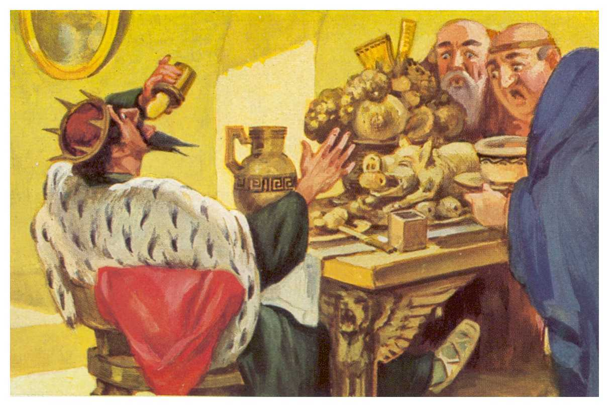
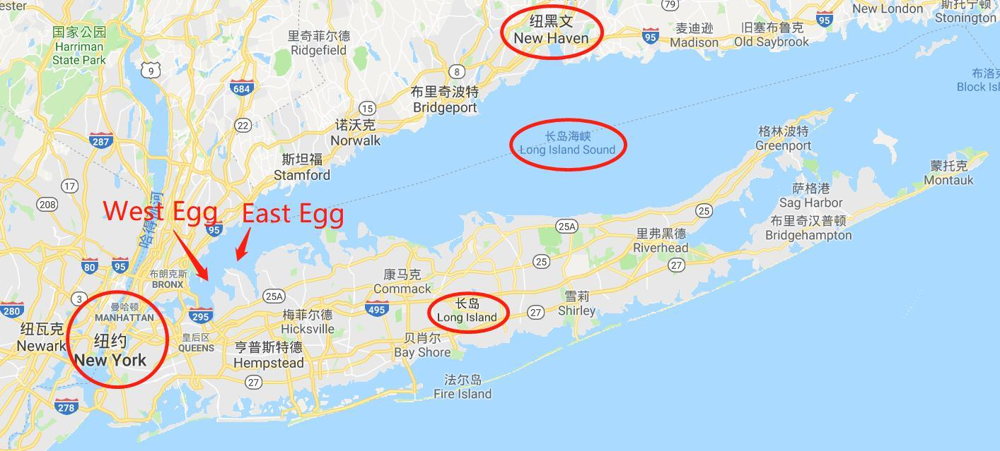
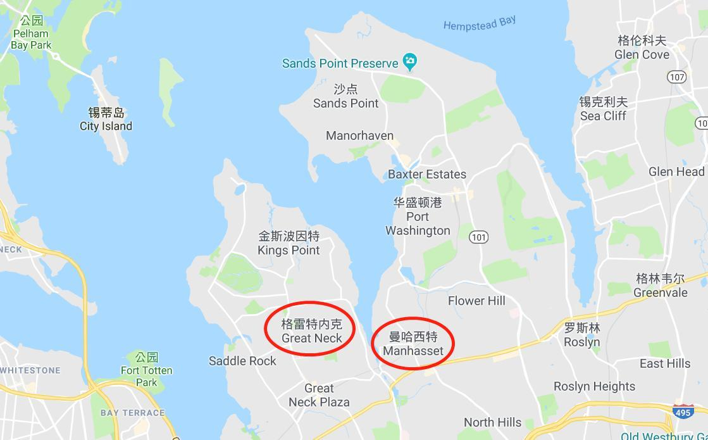
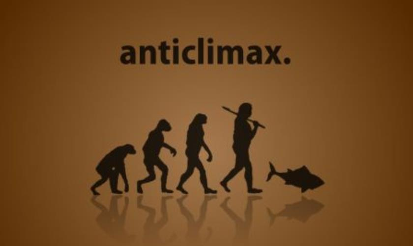
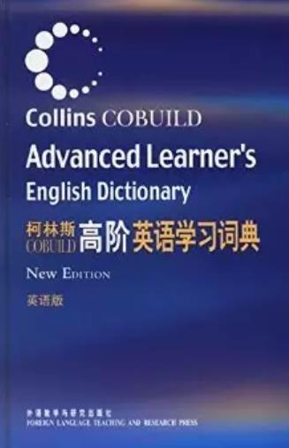

chapter1.2--handout
Background Information
Midas and Morgan and Maecenas
Midas（米达斯）是希腊神话中的佛律癸亚国王（King of Phrygia），因为十分贪恋财富，所以便求神赐给他点物成金的法术，狄俄尼索斯神满足了他的愿望。最后连他的爱女和食物也都因被他手指点到而变成金子。他无法生活，又向神祈祷，一切才恢复原状。

Morgan 即J.P. Morgan (1837-1913), 是1900年代美国最重要的实业家，摩根大通和摩根史丹利都是他的产业。他曾经积极地帮助美国基础工业筹款，并在多个领域成就卓著——包括铁路、钢铁、电话、电力、银行、保险。
关于Morgan有一件大家都不知道的事，在美联储诞生之前，这位爱国金融家在几十年的时间里以其家族的强大经济实力为支撑，扮演了美联储的角色长达几十年。也是由于他力挽狂澜的壮举让美国当局意识到“我们不可能永远都有摩根”，于是才决定成立美联储。
Maecenas（梅塞纳斯）是罗马帝国皇帝奥古斯都的谋臣（statesman）、著名的外交家，但他最显著的功绩恐怕在于提携赞助了不少诗人和艺术家，这当然跟富裕的家境分不开，不过他自己本身也权高位重。由此他的名字在西方还被认为是文学艺术赞助者（patron）的代名词。
West & East Egg
原文提到的细长比并且形状奇怪的小岛（that slender riotous island）就是长岛（Long Island），位于纽约正东方向（extends itself due east of New York）.
而Nick居住在West Egg（西卵区，今天的Great Neck），和Tom以及Daisy居住的East Egg（东卵区，今天的Manhasset）相对。
长岛可以说是整个纽约的后花园，岛上布满森林，雨量充沛，气候湿润。不仅环境宜人地理位置优越，而且西界邻接纽约市皇后区，距离全世界最忙碌最繁华的商业金融中心曼哈顿仅有 20 英里（约32公里），吸引了不少名流富豪定居在此，成为名副其实的富人区。

放大↓

Fitzegerald把这两个地方命名为East Egg和West Egg, 其实有一定的时代背景。
因为在20世纪20年代，纽约的暴发户们（nouveau riche）就开始在这里建造他们的宅邸（mansions）了，起初两边分别叫East Hampton和West Hampton. 然而当时美国人最喜欢的早餐搭配就是Ham and Eggs（火腿鸡蛋），而且如果你住在纽约的曼哈顿区（紧挨着长岛），那么你吃的鸡蛋很可能就来自于长岛上的家禽饲养场（poultry farm）.
由此，Long Island/Ham(pton)/Egg就在人们的认知里紧密相连，提到East Hampton和West Hampton就会想到Eggs, 于是Fitzegerald索性把这两个地方戏称为East Egg和West Egg。（这恐怕也解释了为什么它们看起来并不十分像是鸡蛋的形状~）
Fitzegerald本人也曾经在Great Neck（也就是West Egg）居住过。当时他和Zelda的第一个孩子刚出生，夫妇俩为了节省开支便从曼哈顿搬到长岛（曼哈顿的宾馆一个星期要200美元，而在Great Neck租下一栋房子也就300美元一个月）。所以也就不难想象Nick当时住在West Egg每个月也只用80美元了。
但是对岸的Sand Point可就没那么便宜了，那里聚集的都是背景财产都极为显赫的人家。据不完全统计，当时沿着河岸建造的豪华宅邸就有1200余座，到今天留下的大约是400来座。
Columbus’s egg
作者在形容East Egg和West Egg时提到它们不是完美的椭圆形（not perfect ovals），而是像哥伦布故事里的鸡蛋，延伸进海湾里的那一端就像压碎了一样（both crushed flat at the contact end）. 这里用到了哥伦布的一个典故（allusion），也就是他利用鸡蛋机智地回击了来自西班牙贵族的轻蔑。
当时在一个聚会上，大家照常谈起哥伦布发现印度群岛（Indies）的事迹（哥伦布始终没有承认自己到达的是美洲而不是印度，所以这里还是称作Indies）. 一些西班牙的达官贵族出于妒忌，便讽刺说如果不是哥伦布，在西班牙也一样会有通晓天文地理的人发现Indies, 暗示哥伦布没有什么了不起的。
哥伦布没有直接反驳，而是拿来了一枚鸡蛋看谁能把它立起来。当然最后他们都失败了，而哥伦布则把一端敲碎一点（crushed a little of one end），于是鸡蛋就稳稳当当地立在了桌子上。看似一件简单的事，却不是每个人都能做到，这就是伟人之所以为伟人的原因。
这个典故在后来也经常被人们引用，比如希特勒在《我的奋斗》中曾写道：Examples of The Columbus Egg lie around us in hundreds of thousands; but observers like Columbus are rare. 这个举证也是要说明哥伦布的伟大之处就在于不同寻常的洞察力和思路。
Vocabulary
courtesy
💧n. 礼貌，礼节（good manners; polite behavior）
adj. 礼节性的（done to be polite or show respect）
💧原文：Across the courtesy bay the white palaces of fashionable East Egg glittered along the water...
小湾对岸，东卵豪华住宅区的洁白的宫殿式的大厦沿着水边光彩夺目……
💧courtesy作名词指“礼貌，礼仪”，有一个很常用的短语：(by) courtesy of sb/sth. 表示“承蒙某人的允许，由于某人的好意” ，其实就是冠名致谢，相当于credited by sb/sth. 比如杂志上的照片如果是由某人友情提供的话，下面就会写上Courtesy of xxx.
💧在原文中courtesy作形容词表示“礼节性的”，暗示只是“点到即止，意思一下”，所以这里就是指“海湾很窄”——象征性的有个小湾把两个小岛隔开。
例句：Our captain put in a courtesy visit during dinner.
席间，我们的队长作了礼节性拜访。
💧courtesy还可以用来表示“免费提供的”，比如我们经常会坐的免费机场大巴就叫做courtesy bus.
reproach
💧n. 指责，批评（criticism, blame, or disapproval）
💧原文：His family were enormously wealthy — even in college his freedom with money was a matter for reproach...
他家里非常有钱——还在大学时他那样任意花钱已经遭人非议……
💧reproach表示“指责，批评”，相当于mild criticism, 没有criticism的语气重。比如If you show poor manners at your grandmother's dinner table, she will reproach you.（这里如果用criticize就有点小题大作了）。
💧beyond/above reproach表示“无可指摘的” (impossible to reproach)，也就是形容非常perfect.
例句：His behavior throughout this affair has been beyond reproach.
在这一事件中，他的行为自始至终都无可非议。
Crush Your Problems
- ...and now I was going to bring back / all such things into my life / and become again that most limited of all specialists, / the “well-rounded man.” This isn’t just an epigram — / life is much more successfully looked at / from a single window, after all.
现在我准备把诸如此类的东西重新纳入我的生活，重新成为"通才"，也就是那种最浅薄的专家。这并不只是一个俏皮的警句——光从一个窗口去观察人生究竟要成功得多。
💧句式拆解
这段话的难点在于找到上下文的呼应关系：
①all such things 指的是上文提到的涵盖各领域的书籍，包括a dozen volumes on banking and credit and investment securities还有many other books.
②become again 呼应上文的I was rather literary in college — one year I wrote a series of very solemn and obvious editorials for the “Yale News.”
③...that most limited of all specialists 指“所有专家中最有限、浅薄的那种”，后面跟了一个同位语来说明——the “well-rounded man”, 即“通才”（knows a little about everything）.
④This isn't just an epigram... This即上文暗示的：The “well-rounded man” is the most limited of all specialist. 破折号在这里用于“解释原因”。
💧知识拓展
epigram是指“警句”，也就是以一种俏皮幽默的方式来讲一些很有道理的话。这里是指：The “well-rounded man” is the most limited of all specialist. limited和well-rounded词义上形成对比，达到诙谐讽刺的效果。
表达相同意思的还有一句谚语：Jack of all trades, useful at none.
- To the wingless / a more arresting phenomenon is / their dissimilarity in every particular / except shape and size.
对于人来说，一个更加引起注目的现象，却是这两个地方除了形状大小之外，在每一个方面都截然不同。
💧句式拆解
①To the wingless 介词短语前置（为了强调），the wingless是相对上文的the gulls来说的，所以指没有翅膀的生物——人。正常语序：A more arrresting phenomenon to the wingless is...
②their 指West Egg and East egg.
💧表达精讲
in every particular相当于in every detail. 比如：
The documents were identical in almost every particular.
这些文件几乎在每个细节上都是完全一样的。
这句话的意思是说对海鸥来说，East Egg和West Egg在形状上的相似能把它们弄得晕头转向（but their physical resemblance must be a source of perpetual confusion to the gulls that fly overhead），而对人来说，则是惊叹它们除了形状，其他无一相同。这里暗示了两个地方其实有着不可逾越的鸿沟，我们在课文理解的部分会再详细分析。 - Her husband, / among various physical accomplishments, / had been one of the most powerful ends / that ever played football at New Haven — / a national figure in a way, / one of those men / who reach such an acute limited excellence at twenty-one / that everything afterward savors of anti-climax.
她的丈夫，除了擅长其他各种运动之外，曾经是纽黑文有史以来最厉害的橄榄球锋线球员之一——也可说是个全国闻名的人物，这种人二十一岁就在某个方面取得了登峰造极的成就，往后一切都不免有走下坡路的味道了。
💧句式拆解
①破折号在这里的作用是分隔同位语，所以后面的内容都是修饰Her husband的；
②such...that...在这里表示“如此…以致于…”。
💧表达精讲
①end 在这里指橄榄球运动中的“锋线球员”，主要负责进攻。
②in a way 即“某种程度上”，相当于to some extent.
③such an acute limited excellence “在某个领域（取得）如此登峰造极的成就”。acute, 常见义是“严重的，强烈的，敏锐的”，这里可以理解为extreme, of the highest degree, 强调Tom在21岁就已经到达人生巅峰（climax）; limited, 在上文most limited of all specialists中也出现了，但这里的limited修饰excellence并不是说成就很有限，而是指“在某一特定领域”达到卓越。这两个limited的含义一定要分清哦~
④savor of 这个表达很生动，一般savor sth是指“品味，享受”（to fully enjoy），比如：He hesitated, savoring the moment. 他踌躇着，细细品味这一刻。savor of则表示“带有……的意味”，语气比使用be动词要轻一些，但要注意这种意味一般是不太好的事或品质，比如：
His recent comments savor of hypocrisy.
他近来说的话有点虚伪。
 - The lawn started at the beach / and ran toward the front door for a quarter of a mile, / jumping over sun-dials and brick walks and burning gardens — / finally when it reached the house / drifting up the side in bright vines / as though from the momentum of its run.
草坪从海滩起步，直奔大门，足足有四分之一英里，一路跨过日晷、砖径和火红的花园——最后跑到房子跟前，仿佛借助于奔跑的势头，爽性变成绿油油的常春藤，沿着墙往上爬。
💧句式拆解
①这段话是一个完整句子，虽然看起来非常长，但其实句式结构并不复杂。首先是抓住主语The lawn（注意后面的it和itself都是在指lawn哦~）, 然后找出主句的动词，也就是started at...and ran toward...
②剩下的部分就是现在分词作伴随状语（具体描述草坪是怎么 “跑”到房子跟前的）：首先是jumping over sun-dials and brick walks and burning gardens, 然后是变成常春藤drifting up the side.
③其中有两个插入的状语从句，一个由when引导，另一个由as though引导。（把这两个从句拿掉就可以理清句子的结构啦~）
破折号在这里的作用是表示“停顿”或是一种“延续性”，也就是前面的动作jumping一直在进行，更突显出动感。
💧外刊高频词
momentum 在这里指“〔使运动物体继续运动的〕冲力，推力”，这股动力从绵延的草坪到了墙上茂盛生长的常春藤。momentum还可以用于抽象事物，表示一种“势头”。比如：
The number of electric cars on the road is rising fast; green finance is gathering momentum.
— The Economist
电动汽车的数量急速增加 ，由此绿色金融的发展势头也在猛增。
- Now he was a sturdy straw-haired man of thirty / with a rather hard mouth / and a supercilious manner. Two shining arrogant eyes had established dominance over his face / and gave him the appearance / of always leaning aggressively forward.
现在他是三十多岁的人了，肢体健壮，头发稻草色，嘴边略带狠相，举止高傲。两只炯炯有神的傲慢的眼睛已经在他脸上占了支配地位，给人一种永远盛气凌人的印象。
💧表达精讲
①hard 在这里可以理解为“凶狠的，冷酷的”，也可以形容脸庞或是声音（a hard face/voice）.
②supercilious 指“目中无人的”，相当于self-important (regarding that oneself is more important than others).
③had established dominance over his face 最好不要直译为“在他的脸上建立主权”；dominance表示being more important, noticeable. 所以这里可以理解为他那炯炯有神、透露着傲慢之气的眼睛（Two shining arrogant eyes）在他脸上显得非常突出、引人注目。
- There was a touch of paternal contempt in it, even toward people he liked — and there were men at New Haven who had hated his guts.
他说起话来还带着一种长辈教训人的口吻，即使对他喜欢的人也样。因此在纽黑文的时候，对他恨之入骨的大有人在。
💧表达精讲
①paternal 原义是“如父亲般的”，但这里paternal contempt解释为“带着父亲般的轻蔑”明显不通。因此paternal需要从另一个角度来理解，也就是指“家长式的，长辈式的”，相当于paternalistic（tending to take all the decisions for the people they govern, employ），凡事都要他们说了算。
②hate one's guts 指“恨透某人，对某人恨之入骨”，这个用法在今天已经很寻常了，但它在Fitzegerald写作的那个年代才刚兴起，所以也就是那个时候的catchphrase（流行语）啦~
guts原义是指“内脏；核心，本质”，因此hate one's guts就相当于说 I hate everything about you, right down to the very core of who and what you are.
Content Analysis
💧Clue 1: West Egg stands for NEW and East Egg for OLD.
大家可能会发现，作者用了很大的笔墨已经夸张的手法来强调West Egg和East Egg在外形上的相似之处，但这其实是为了反衬它们实际有着不可相融的本质——
Evidence 1:To the wingless a more arresting phenomenon is their dissimilarity in every particular except shape and size.
对于人来说，一个更加引起注目的现象，却是这两个地方除了形状大小之外，在每一个方面都截然不同。
为了更好地理解这两个地方的差别，老师再给大家补充一个背景知识：
以West Egg为原型的Great Neck当时主要聚集着各色人群，有白手起家致富的暴发户（像Gatsby这样的，我们的主角还没正式出场，在这里先cue一下），也有从事金融证券行业的白领（比如Nick），还有倒腾私酒的（称为bootlegger, 我们之后会再介绍）。
但以East Egg为原型的Manhasset则是完全不同的景象，比如在Sand Point拥有豪宅的可都是从祖上三代以上起就家产万贯，并且地位也非常显赫（例如Tom—who comes from an old, wealthy Chicago family）.
简而言之，West Egg和East Egg分别以两种人群为代表：一种是自己白手起家的（self-made），称为New Money（新贵阶层——暴发户，土豪）；另一种是靠继承家产的（inherited），称为Old Money（传统贵族）。
Evidence 2: I lived at West Egg, the — well, the less fashionable of the two, though this is a most superficial tag to express the bizarre and not a little sinister contrast between them.
我住在西卵，这是两个地方中比较不那么时髦的一个，不过这是一个非常肤浅的标签，不足以表示二者之间那种离奇古怪而又很不吉祥的对比。
所以我们说West Egg和East Egg分别代表了NEW和OLD, 这里不仅指获得财富的方式，还有道德价值观。并且作者说这种对比甚至是bizarre（古怪的）和not a little sinister（极为不详的），也是在暗示妄想跨越这条鸿沟可能会带来毁灭性的后果（预言了本书结尾的悲剧）。
💧Clue 2: Nick actually disapproves Daisy's marriage to Tom.
虽然Nick从本书开篇就尝试树立自己作为一个客观公平（unbiased）的旁观者的形象，但从他对Tom的描写之中，我们还是能够捕风捉影地感受到他的不满，尤其是对于Tom和Daisy的婚姻，他其实也是小有意见的。下面就来一探究竟——
Evidence 1:This was a permanent move, said Daisy over the telephone, but I didn’t believe it — I had no sight into Daisy’s heart, but I felt that Tom would drift on forever seeking, a little wistfully, for the dramatic turbulence of some irrecoverable football game.
这次是定居了，黛西在电话里说。可是我并不相信——我看不透黛西的心思，不过我觉得汤姆会为追寻某场无法重演的球赛的戏剧性的激奋，就这样略有点怅惘地永远飘荡下去。
根据Nick的叙述，这段话暗藏了一个小细节：在搬来长岛之前，Tom和Daisy其实一直过着到处奢侈玩乐的生活（had lived in the lap of luxury），频繁变换居所也是司空见惯的事。于是当Daisy在电话里说这是最后一次搬家的时候，Nick在心里表示了怀疑。因为在他看来，像Tom这样的人是没办法安定的。
Nick给出的判断理由是——他会为了某一场一辈子只能遇到一次的球赛所带来的喧腾和激情一直若有所失地追寻漂泊，但Tom果真只是为了看球赛吗？当然不是，这个例子想要说明的是对于Tom这样从来不缺衣食生活奢靡的人来说，他们只会不断地寻求新的刺激，也就是感官上的享乐，永远不可能满足于当下的生活状态，生活方式如此，感情婚姻尤甚。
Today's Bonus
💧关于查单词的那些事儿
通过前面的词汇学习和难点解析，大家可能会发现我们需要经常借助英文释义来理解一个单词，这在高阶阅读中是一个非常重要的能力哦~那么今天的彩蛋老师会为大家介绍在这个过程中必不可少的一样工具——字典，以及各种类别字典的优势~
目前市面上所有的英语词典，可以概括为三类：英汉词典，英汉双解词典，以及英英词典。
英汉词典一般由中国人编写，一个单词只给出中文释义；英汉双解词典顾名思义，会给出一个单词的英文释义，同时给出相对应的汉语解释。最被中国英语学习者熟悉和喜爱的英汉双解词典，要数商务印书馆出版的《牛津高阶英汉双解词典》。
除了这本大家最熟悉的，还想给大家推荐另一部强大的英汉双解词典，由外研社出版的《柯林斯高阶英语学习词典》。对于英语基础较为薄弱的同学，强力推荐。因为这本词典在单词释义时，给出了这个词的使用情景，而且这部词典收录的约146000个单词，对于一个想成为英语牛人的同学来说，绝对够用了。

英英词典顾名思义，单词释义没有中文，只有英文。比如市面上比较著名的Merriam-Webster’s Collegiete Dictionary.
这类英英词典，比较适合英语已经达到高阶水平的外语学习者和英语为母语的国家的人使用。当我们需要了解一个词在英文语境中究竟该怎样使用，如何表达更地道准确这方面，只查出一个单词的中文释义是远远不够的，因为英语中很多词汇语义微妙，所以英英词典很好的弥补了这点。而英汉双解词典中往往有丰富地道的例句，这能帮助我们更加清楚全面的掌握单词的搭配和在具体语境中的运用。
当然，除了以上列出的基本英语词典外，还有一些针对英语学习者细分的词典，比如以下的一些：
感兴趣的同学不防买来好好利用下！
当然，以上介绍的都是纸质版词典，目前很多词典都推出了自己的APP, 其中有些需要付费获取完整版内容。大家不妨自己搜一搜适合自己目前阶段的词典APP。总而言之，对于现在正在水滴阅读打卡的小伙伴们，不论你选择哪家词典，我们都强烈建议选择有中英双解的词典。
工欲善其事，必先利其器。是时候该重新审视一下你手机里的词典APP能否满足每天英文都在进步的你啦！
最后的最后，推荐给大家几个网站，或许你在英语词汇学习的道路上又能功力大涨哟！
www.vocabulary.com/
www.merriam-webster.com/
www.dictionary.com/
www.oxforddictionaries.com/